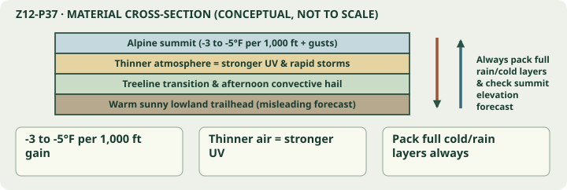

Z12-P37 · Extreme environments · New manuscript
Account for rapid elevation cooling, thin UV air and fast mountain storms
Prepare for steep vertical temperature drops, heightened solar UV and sudden freezing squalls in mountain terrain.
When it applies · Mountain hikes, passes and alpine backcountry above 5,000–14,000 feet across all four seasons.
Equipment · Full rain/wind shell, warm insulating mid-layer, hat/gloves, UV eyewear and elevation-matched NWS forecast.

Actions
- Expect air temperatures to drop roughly 3°F–5°F for every 1,000 feet of elevation gain (plus severe wind chill on open passes)—a 75°F valley trailhead routinely meets 40°F sleet and freezing gusts at an alpine pass.[X10, E15, N06]
- Protect skin and eyes against stronger ultraviolet intensity in thinner high-altitude air using UV sunglasses, brimmed hat and sunscreen even when air feels cool.[X10, E02, ED]
- Expect clear blue alpine mornings to build rapidly into lightning, hail or sudden summer snow squalls by early afternoon—carry full cold-wet shelter layers on EVERY mountain trip regardless of morning sun.[X10, E18, E09]
Failure recognition · Packing only a light windbreaker for a sunny July 12,000-foot pass hike and getting caught in a 35°F afternoon hailstorm.[X10, E06, E18]
Verify · Check the summit/pass elevation forecast (not valley town weather) and pack warm/waterproof layers plus UV protection before departing.[X10, N06, E09, ED]
Stop or change course · Rapid temperature drops, sleet, hail or building clouds above treeline trigger immediate descent back into sheltered forest before hypothermia or lightning strikes.[X10, E07, E06]
Evidence and editorial notes
- E02 · NPS · Ten Essentials (current web edition)
- Section: Navigation; insulation; emergency shelter; emergency food and water · Conditions: Outdoor trips; adjust kit to season and route
Support: Carry essential systems including navigation, insulation, light, water and emergency shelter.
Limitations: Carrying items without practice or cold-weather verification does not ensure readiness. · Conflicting evidence: None; baseline kit system architecture.
Editorial note: Supports failure-mode packing and kit verification cards. · Specialist reviewer: Field education and search and rescue
Primary source · checked 2026-11-24 - E06 · CDC · Preventing Hypothermia (current web edition)
- Section: Recognizing and treating hypothermia · Conditions: Cold wet exposure; signs such as confusion, slurred speech, fumbling or drowsiness
Support: Suspected hypothermia warrants prompt help and protection from further cooling. It can occur above freezing if wet or chilled.
Limitations: Early mild shivering can mask rapidly worsening judgment impairment. · Conflicting evidence: None; aligns with ARC and WMS guidance.
Editorial note: Anchors exposure-to-medical escalation thresholds. · Specialist reviewer: Wilderness medicine
Primary source · checked 2026-11-24 - E07 · NWS · Lightning Tips (current web edition)
- Section: If you hear thunder; when it is safe to return · Conditions: Thunderstorm and reachable substantial building or enclosed hard-topped vehicle
Support: Move to proper shelter at thunder. Wait 30 minutes after last thunder before resuming outdoor activity.
Limitations: Fabric tents, open pavilions, and trees are not lightning-safe shelters. · Conflicting evidence: None; 30-minute rule is standard NWS guidance.
Editorial note: Separates weather cover from lightning protection in Z02. · Specialist reviewer: Weather safety and emergency management
Primary source · checked 2026-11-24 - E09 · NPS · Ten Essentials (current web edition)
- Section: Insulation; Emergency Shelter · Conditions: Weather, terrain and expected overnight risk
Support: Extra clothing and usable emergency shelter belong in the route-specific kit.
Limitations: Emergency bivies and space blankets trap condensation and tear easily if misused. · Conflicting evidence: None; requires inspecting and practicing shelter deployment.
Editorial note: Supports overnight emergency shelter readiness. · Specialist reviewer: Cold-weather shelter and field education
Primary source · checked 2026-11-24 - E15 · NWS · Cold Weather Safety (current web edition)
- Section: Cold Weather Safety > Wind Chill and Dressing for Cold · Conditions: Cold, windy conditions where exposed skin cools rapidly
Support: Wind removes the thin warm air boundary layer around skin and permeable fabrics, sharply accelerating heat loss and frostbite onset; windproof outer shells and sheltered microclimates mitigate convective loss.
Limitations: Wind chill charts apply to exposed skin and do not change freezing point of water or equipment. · Conflicting evidence: None; clarifies physical mechanism of convective heat loss.
Editorial note: Supports wind-block geometry, shell layering, and wind-chill risk decisions. · Specialist reviewer: Cold-weather shelter and meteorology
Primary source · checked 2026-11-24 - E18 · NWS · Thunderstorm Safety (current web edition)
- Section: Thunderstorm Safety > Hail, Downbursts, and Flooding · Conditions: Approaching severe thunderstorm with hail, outflow gusts, or heavy rain
Support: Outflow gusts, hail, lightning, and flash runoff can strike before rain arrives at camp; break exposed ridge travel early and secure or vacate lightweight shelters.
Limitations: Storm cells can intensify faster than backcountry foot travel can clear exposed terrain. · Conflicting evidence: None; integrates with E04 and E07.
Editorial note: Connects storm-structure warning cues to early shelter selection. · Specialist reviewer: Weather safety and emergency management
Primary source · checked 2026-11-24 - N06 · NOAA NWS · JetStream Online School for Weather (current web edition)
- Section: JetStream > Clouds, Fronts and Atmospheric Pressure · Conditions: Field weather observation and short-term storm anticipation
Support: Thickening high-to-low cloud decks, rapid barometric drops, towering cumulus building into anvils and backing/shifting winds often signal approaching frontal systems or convective storms.
Limitations: Local visual weather signs supplement—and never replace—official NWS forecasts and active warnings. · Conflicting evidence: None; separates physical weather cues from folklore sayings.
Editorial note: Grounds cloud, front, wind-shift and microclimate weather cards in Z11. · Specialist reviewer: Meteorology and outdoor leadership
Primary source · checked 2026-11-24 - X10 · NPS · Rocky Mountain Safety (High-Elevation and Mountain Travel) (current web edition)
- Section: Rocky Mountain Safety > Afternoon Lightning, Rapid Cooling and Steep Terrain · Conditions: High-elevation ridges, alpine passes and mountain weather
Support: Mountain temperatures drop sharply with elevation and sunset, afternoon thunderstorms build rapidly over exposed ridges (requiring early starts and turning back below treeline), and steep snowfields conceal runout hazards.
Limitations: Clear morning skies routinely shift to severe lightning and sleet by early afternoon. · Conflicting evidence: None; integrates with E07, E23 and CDC-ALT.
Editorial note: Grounds mountain timing, treeline retreat and elevation-cooling cards. · Specialist reviewer: Mountain safety and meteorology
Primary source · checked 2026-11-24
Source lineage · NPS Rocky Mountain safety and NWS weather; new manuscript · Classification · New manuscript.